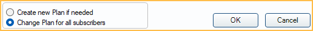

Change Insurance Plan Information
When a patient's Insurance Plan information or benefits change, updates also need to be made within Open Dental. The steps to take depend on the scenario.
If a patient has a brand new plan, employer, carrier, etc., we recommend dropping the plan, not changing an existing plan. Dropping a plan does not change historical information, but changing plan information can. If in doubt, drop the plan, don't change it. See Drop Insurance Plan.

Create new plan if needed: When Fields that Trigger New Plan are changed, a brand new plan is created for the subscriber (and any dependents). Changes to Benefit Information alone do not trigger a new plan.
Change plan for all subscribers: Changes, limited to Fields that Trigger a New Plan, change for all subscribers. To enable this option by default, enable InsPlan option at bottom 'Change Plan for all subscribers', is default. in Preferences
Change Employer Name
If an employer's name changes, update it via the Employers List. It will be updated for all patients with the plan.
- In the Main Menu, click Lists, Employers.
- Double-click the employer to open the Edit Employer window.
- Change the name.
- Click OK to save.
Change Subscriber
If there is no claim history for the insurance plan, in the Edit Insurance Plan window, click Change and select the new subscriber.
If there is claim history for the insurance plan, the subscriber cannot be changed. Instead, drop the insurance plan and create a new one with the new subscriber information.
Change Carrier Information (e.g. address, phone)
Always change carrier contact information via the Carriers List. It will be updated for all patients with the plan.
- In the Main Menu, click Lists, Insurance Carriers.
- Double-click the carrier to open the Edit Carrier window.
- Change the details.
- Click OK to save.
Change Plan Information for All Subscribers
When multiple subscribers have the same plan, plan information can be changed for all subscribers at once. Usually this is only done when plan information is incomplete or inaccurate. Most changes do not affect historical estimates or claims. Changes can made via the Insurance Plans List or from a subscribing patient's Edit Insurance Plan window.
To make changes from the Insurance Plans List:
- In the Main Menu, click Lists, Insurance Plans.
- Double-click the insurance plan to open a modified version of the Edit Insurance Plan window (Only Insurance Plan and Benefit Information shows).
- Change any insurance plan information or benefit percentages.
- Click OK to save.
To make changes from a subscribing patient:
- Select the patient.
- In the Family module, double-click the insurance plan to open the Edit Insurance Plan window.
- Make sure Change plan for all subscribers is selected.
- Change any insurance plan information or benefit percentages.
- Click OK to save.
Change Plan for a Single Subscriber
Follow these steps to change plan information and/or benefits for a single subscriber only. These steps create a new insurance plan.
- Select the patient.
- In the Family Module, double-click the insurance plan to open the Edit Insurance Plan window.
- Select the Create new Plan if needed radio button.
- Change the insurance plan (including at least one Field that Triggers a New Plan) and benefits as needed.
- Click OK to save.
If there are multiple subscribers on the plan, a new plan is created and the subscriber, along with any dependents (patients under the subcribers's plans), are moved to the new plan.
Move Subscribers from One Plan to Another Plan
Moving subscribers is useful at the beginning of a benefit year when insurance plans may change for a group of subscribers. This tool moves subscribers of one plan to another plan, and drops the old plan. The move is irreversible. See Move Subscribers.
Check/Change Fee Schedule Assignments for Multiple Insurance Plans
Use the Check Ins Plan Fee tool to check which fee schedules are assigned to insurance plans and, if needed, quickly change the assigned fee schedule. Fee schedules can be changed for multiple plans at once. See Check Ins Plan Fees for more detailed steps and the password that is required.
- In the Main Menu, click Setup, Fee Schedules.
- Next to Check Ins Plan Fee Schedules, click Go.
- Review the fee schedules used by each plan.
- Select the insurance plan(s) to assign a new fee schedule.
- Click the New Fee Schedule dropdown to select the new fee schedule.
- Click Change to change the fee schedule for all selected insurance plans. A password is required.
Troubleshooting
Creating a New Plan for Dependents
If a new plan is needed for the dependents on a plan, a new plan must be created instead. The same plan cannot be split between the subscriber and dependents.
Creating a New Plan with Different Benefits
If an existing plan is selected, the radio button setting is Create New Plan, and changes are made to insurance plan information fields, close the Edit Insurance Plan window before adding or editing benefit information for the new plan. If the window is not closed first, and benefit amounts are edited, any benefit changes are applied to both the new plan and all subscribers of the original plan.
- Click OK.
- Reopen the new plan.
- Double-click to edit Benefit Information.